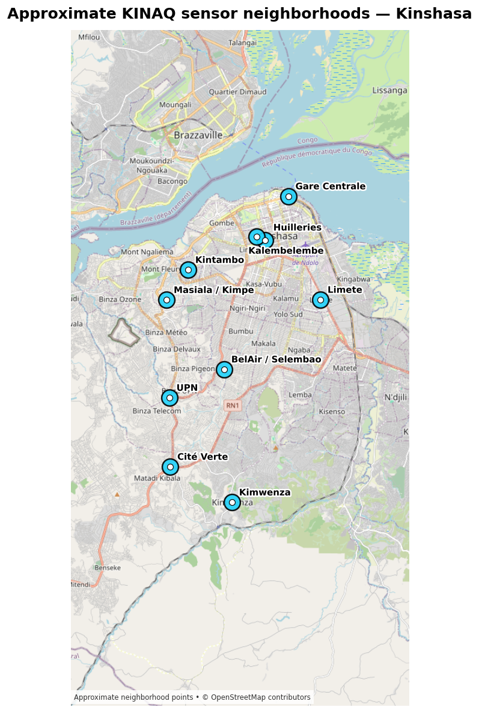
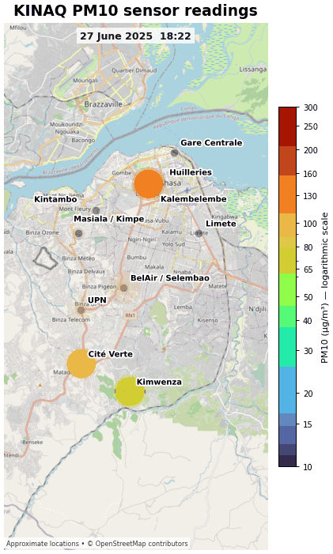
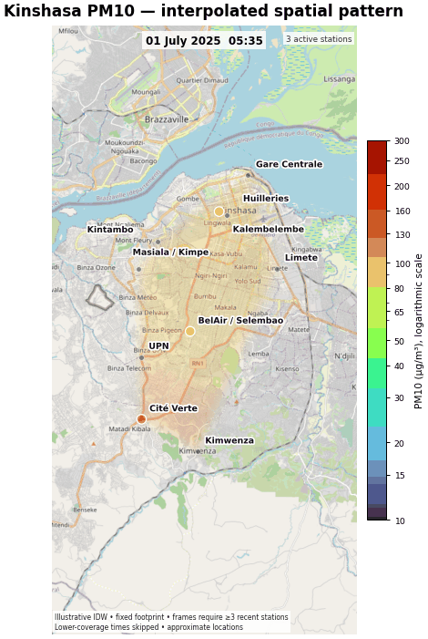

Low-cost sensor analysis, spatial interpolation, and forecasting in Kinshasa, Democratic Republic of the Congo.
As Industry Outreach and Air Quality Researcher at CrudeCast, I led air-quality research in collaboration with the Energy Policy Institute at the University of Chicago, Dr. Daniel Westervelt, and Wasaru. The project used data from a distributed network of low-cost sensors measuring PM₂.₅, PM₁₀, and volatile organic compounds (VOCs) across Kinshasa.
The sensor observations supported quality control, time-series forecasting, and continuously updated maps of air-pollution conditions. Inverse distance weighting (IDW) was used to estimate spatial patterns between monitoring locations when sufficient stations were reporting.
Approximate sensor neighborhoods were mapped across Kinshasa to describe the geographic coverage of the monitoring network and provide spatial context for interpreting station measurements.

Animated station maps show how measured PM₁₀ concentrations changed across the monitoring network. Marker size and color communicate the relative concentration reported at each active station.

IDW interpolation was used to convert discrete station observations into a continuous spatial representation of PM₁₀ conditions. Frames were generated only when at least three stations had recent observations, and lower-coverage periods were skipped to avoid presenting unsupported spatial detail.

Low-cost monitors can expand spatial and temporal coverage in cities where conventional monitoring infrastructure is limited. Their value, however, depends on careful quality control, transparent mapping methods, and clear communication of uncertainty. This project connects sensor-data engineering, spatial analysis, and forecasting with a public-information use case.
| Location | Kinshasa, Democratic Republic of the Congo |
|---|---|
| Pollutants | PM₂.₅, PM₁₀, and VOCs |
| Role | Industry Outreach and Air Quality Researcher |
| Methods | Low-cost sensors, quality control, time-series analysis, IDW spatial interpolation, forecasting, and LLM tools |